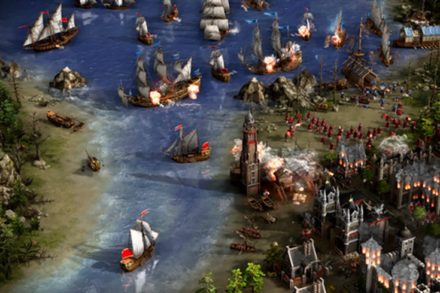
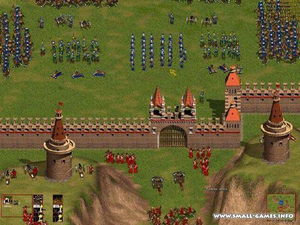
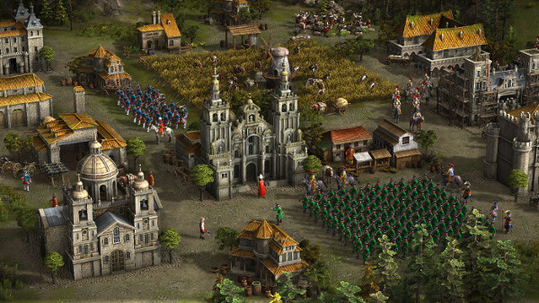

PlayBoy
PlayBoyИгра
Казаки: Европейские Войны (Cossacks: European Wars) — это историческая стратегия реального времени, от разработчика GSC Game World®, основанная на европейских войнах XVII-XVIII веков. В игре участвуют 16 стран: Украина, Россия, Турция, Польша, Пруссия, Австрия, Швеция, Англия, Франция, Испания, Португалия, Пьемонт, Саксония, Алжир, Нидерланды и Венеция. Графика и баланс для каждой страны созданы с учетом исторических фактов и особенностей, что позволяет окунуться в историческую эпоху и возглавить грандиозные сражения минувших дней. В кампаниях одиночной игры воссозданы более 85 крупных войн, сражений и военно-экономических конфликтов XVII-XVIII веков.
- Игра Казаки: Европейские Войны является началом в целой эпохе серий игр «Казаки». Именно в ней заложена основа, движок, который будет не так кардинально переделан в последующих аддонах.
- В этой игре вы сможете устраивать грандиозные битвы с участием до 8000 боевых единиц в сетевой или одиночной игре. Игрок может использовать партизанскую войну, осаду городов, захватывать командные высоты и устраивать засады, высаживать свои сухопутные силы на вражеском берегу, и проводить битвы на море.
- Эпоха нескончаемых войн и сражений полностью отражается на картах игры «Казаки». Тридцатилетняя и Семилетняя войны, война за Австрийское Наследство, Гражданская война в Англии, Русско-Турецкие войны, Турецкая экспансия в Европу, Северная война, Освободительная война украинского народа, Польско-Русская война, война Нидерландов за Независимость и многое другое на страницах легендарной стратегии «Казаки».
- Особенности
- Еще
- И еще



Нации в игре
- Австрия
- Классическая страна
- Здесь есть все: обычные для Европы юниты, легкая кавалерия, рундаширы для раша, элитный стрелок. Неплохой выбор против Украины. Очень быстрая постройка ТЦ — отличная возможность первым поменять уголь. Недостаток: большой размер зданий, что усложняет обзор и контроль. 3 уникальных юнита: рундашир, кроат и пандур.
- Пруссия
- Черные гусары смерти
- Один из лучших мушкетеров 18 века в игре. Дешевая подкова, дешевый 18 век. Гусары строятся на треть быстрее, чем у других наций, но имеют атаку -3 по сравнению с другими гусарами, дешевые первые апгрейды для гусара. Стоит остерегаться массивной кавалерийской атаки в середине игры. Этому даже не помешают очень дорогие палаши. Неплохие мушкетеры 18 века. Популярная нация для миллионов и большого ПТ.
- Украина
- Самая необычная нация
- Она необычна во многом: крестьяне — полноценный боевой юнит. Захватывает здания противника, самого же можно захватить только в шахте. Еще один плюс — относительно быстрая, но дорогая постройка воздушного шара. С другой стороны: отсутствие каменных стен, башен, офицеров, пикинеров, флота. По сути, все 4 сухопутных юнита уникальны: сердюк, гетман, реестровый и сечевой казак. За Украину нельзя перейти в 18 век, но зато возможен ранний 2-ой апгрейд в мельнице. Сердюк — лучший мушкетер 17 века и один из лучших стрелков в игре.
| Нация | Самый сильный юнит | Самый слабый юнит |
|---|---|---|
| Австрия | Пандур | Крестьянин |
| Пруссия | Чёрные гусары | Крестьянин |
| Украина | Крестьянин | Женщина-крестьянин |